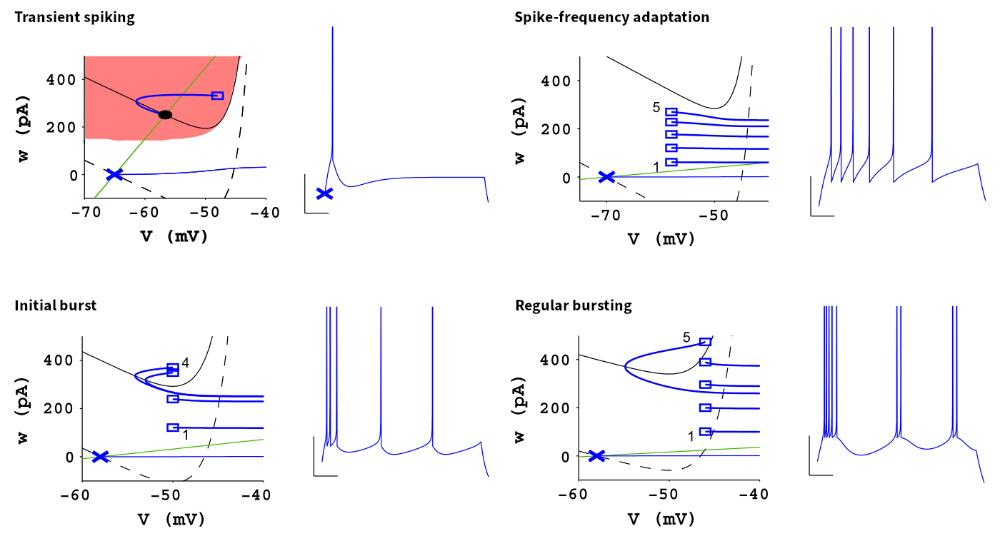
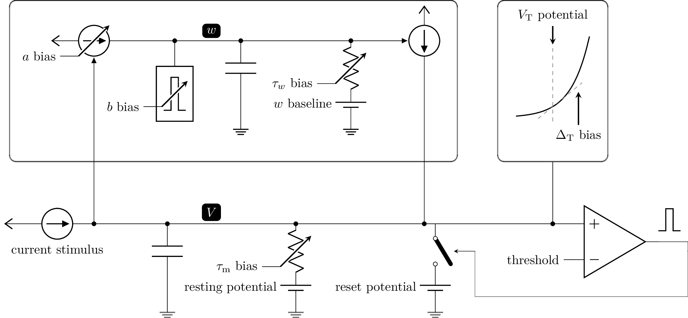

Complex Neuron Dynamics with a Silicon Adaptive Exponential Integrate-and-Fire Neuron
Biological neurons exhibit electrophysiological behavior beyond the dynamics of the plain leaky integrate-and-fire model. These dynamics include adaptation processes on vastly different time scales which may act either as positive or as negative feedback, which can lead to bistable behavior such as transient dynamics or bursting. A plethora of more complex neuron models attempt to capture these higher-order effects with a varying degree of biophysical detail.
The adaptive exponential integrate-and-fire model
The adaptive exponential integrate-and-fire (AdEx) equations address this in a rather phenomenological manner and for that purpose simply extend the leaky integrate-and-fire equation. It introduces an exponential feedback current to mimic the onset of an action potential and augments the membrane equation by a second differential equation for an adaptation current \(w\):
On top of the LIF model, these equations introduce the exponential slope and threshold \(\Delta_\text{T}\) and \(V_\text{T}\), respectively, the adaptation current \(w\), its time constant \(\tau_w\), the spike-triggered increment of the adaptation state \(b\), and the subthreshold adaptation strength \(a\).
The silicon neuron possesses a set of additional, more technical parameters, e.g. for the baseline of the adaptation state voltage.
A rather detailed analysis of the AdEx dynamics was performed by Naud et al. (2008) and might be useful for the interested reader:
The firing patterns of the AdEx model
The AdEx dynamics are capable of reproducing many of the firing patterns whitnessed in electrophysiological recordings – only by means of choosing suitable model parameters. Naud et al. (2008) analyzed these different configurations in great detail. We will, in the following, limit ourselves to the following four examples (adapted from Naud et al. (2008)):
{kind=link}
Each pattern is an AdEx neuron’s response to a constant step current. It is characterized through the resulting spike times and the membrane trace, which is shown next to the trajectory through the phase space of both the membrane potential \(V\) and the adaptation current \(w\). These phase diagrams display the behavior of the complete dynamical system including, e.g., the discontinuities at the respective spike times. They also indiciate the nullclines, i.e. the curves where \(\dot V (w) = 0\) (black curves, solid: resting state, dashed: during stimulus) and \(\dot w (V) = 0\) (green line), respectively. For a more detailed description, please refer to Naud et al. (2008).
Silicon neuron implementation
The silicon neurons of BrainScaleS-2 attempt to faithfully implement the AdEx dynamics as captured by the above system of differential equations. Each model parameter can be tuned by means of either programmable voltage references or bias currents.
Deviating from the original equations, the silicon neuron keeps track of the adaptation state in form of a voltage, which is then converted into a current flowing onto the membrane; the neuron consists of two coupled leaky integrators. The resistive elements behind these RC circuits are implemented from active, transistor-based (trans-)conductances and can be tuned through bias currents (higher bias currents will result in stronger conductances – corresponding to, e.g., lower time constants). While cross-dependencies between different parameters have been reduced to a minimum during the design phase, a direct one-to-one correspondence between model and circuit parameters is not always guaranteed. The following diagram attempts to highlight the fundamental dependencies and all parameters revelant for a basic understanding of the AdEx circuits.
{kind=link}
The two RC circuits representing the membrane and the adaptation term are coupled through two voltage-controlled current sources with a tunable transconductance (strength), which we use to, e.g., tune the subthreshold adaptation strength.
%matplotlib inline
from _static.common.helpers import setup_hardware_client
setup_hardware_client()
import pynn_brainscales.brainscales2 as pynn
from _static.tutorial.snn_adex_helpers import plot_membrane_dynamics, build_gui
from ipywidgets import fixed
import matplotlib.pyplot as plt
import pyhalco_hicann_dls_vx_v3 as halco
def adjust_calibration():
for i in halco.iter_all(halco.CommonNeuronBackendConfigOnDLS):
pynn.simulator.state.grenade_chip_config.neuron_block.backends[i].enable_clocks = True
pynn.simulator.state.grenade_chip_config.neuron_block.backends[i].clock_scale_fast = 3
pynn.simulator.state.grenade_chip_config.neuron_block.backends[i].clock_scale_slow = 3
pynn.simulator.state.grenade_chip_config.neuron_block.backends[i].\
clock_scale_adaptation_pulse = 7
pynn.simulator.state.grenade_chip_config.neuron_block.backends[i].\
clock_scale_post_pulse = 5
def experiment(**kwargs):
global last_configuration
last_configuration = kwargs
target_neuron = kwargs.pop("target_neuron", 0)
pynn.setup(neuronPermutation=[target_neuron, target_neuron + 1])
pop = pynn.Population(2, pynn.cells.HXNeuron())
neuron = pop[0]
readout_dummy = pop[1]
neuron.reset_v_reset = 300
neuron.reset_i_bias = 1022
neuron.reset_enable_multiplication = True
neuron.membrane_capacitance_capacitance = 63
neuron.refractory_period_refractory_time = 30
neuron.refractory_period_enable_pause = True
neuron.threshold_v_threshold = 620
neuron.threshold_enable = True
# adaptation
neuron.adaptation_enable_pulse = True
neuron.adaptation_i_bias_b = 0
neuron.multicompartment_connect_right = True
neuron.exponential_enable = any([k.startswith("exponential") for k in kwargs.keys()])
if any([k.startswith("adaptation") for k in kwargs.keys()]):
enable_adaptation = False
if "adaptation_i_bias_a" in kwargs.keys() and kwargs["adaptation_i_bias_a"] != 0:
enable_adaptation = True
if "adaptation_i_bias_b" in kwargs.keys() and kwargs["adaptation_i_bias_b"] != 0:
enable_adaptation = True
neuron.adaptation_enable = enable_adaptation
if enable_adaptation:
# the adaptation leak reference has to track the membrane leak to avoid offset currents
neuron.adaptation_v_leak = 500 + kwargs["leak_v_leak"] - 700
for k, v in kwargs.items():
setattr(neuron, k, v)
readout_dummy.membrane_capacitance_capacitance = 0
readout_dummy.leak_i_bias = 0
readout_dummy.leak_enable_division = True
readout_dummy.threshold_enable = False
pop[0:1].record(["adaptation", "spikes"])
pop[1:2].record(["v"])
adjust_calibration()
# schedule and execute hardware run
pop[0:1].set(constant_current_enable=False)
pynn.run(0.1, pynn.RunCommand.APPEND)
pop[0:1].set(constant_current_enable=True)
pynn.run(0.6, pynn.RunCommand.APPEND)
pop[0:1].set(constant_current_enable=False)
pynn.run(0.3, pynn.RunCommand.EXECUTE)
plot_membrane_dynamics(pop)
plt.show()
pynn.end()
Understanding subthreshold adaptation
Get accustomed with the shown neuron parameters and attempt to associate them with model parameters from the differential equations.
Observe the membrane and adaptation states and characterize their response to a change in the stimulus current and sub-threshold adaptation bias. (Hint: It might be advantageous to start from a clean state, i.e. re-execute the cell to reset the parameters.)
You should be able to observe a “ringing” at the transients, visible as an overshoot at the leading and trailing edges of the stimulus current.
Can you induce a (dampened) oscillatory behavior at the transients of the stimulus? Consider strengthening the sub-threshold adaptation and aligning the leak and adaptation time constants (by slowing down the membrane and increasing the speed of the adaptation state).
build_gui(experiment, ["leak_i_bias", "leak_v_leak", "adaptation_v_ref", "adaptation_i_bias_tau", "adaptation_i_bias_a", "constant_current_i_offset"], {"target_neuron": fixed(1)}, defaults={"adaptation_i_bias_a": 10, "leak_enable_division": True})
{kind=link}
Transient spiking
Let’s now consider a few more neuron parameters (i.e. reset potential, spike-triggered adaptation strength, exponential onset potential, and exponential slope bias). Associate them with quantities from the differential equations.
Exploit the overshoot observed before to reach a configuration where the neuron only fires at the leading edge of the stimulus.
Gradually reduce the exponential onset potential until you oberve spikes. What’s the impact of this voltage and the reset potential on the spike count?
Configure the neuron to emit approximately three spikes marking the onset of the stimulus. Now increase the spike-triggered adaptation strength and observe its impact on the adaptation state and the spike count. Adjust it to enforce only a single spike.
build_gui(experiment, ["leak_i_bias", "leak_v_leak", "reset_v_reset", "adaptation_v_ref", "adaptation_i_bias_tau", "adaptation_i_bias_a", "adaptation_i_bias_b", "exponential_v_exp", "exponential_i_bias", "constant_current_i_offset"], {"target_neuron": fixed(0)}, copy_configuration=True)
{kind=link}
Spike-frequency adaptation
Let us now consider a state with dominating spike-triggered adaptation by reducing (or disabling) the strength of the sub-threshold component. Reduce the exponential onset potential until you observe approximately a dozen spikes during the stimulus (and only during the stimulus).
Now increase the spike-triggered adaptation strength and observe its impact on the inter-spike intervals. Also describe the impact of the adaptation time constant and vary the stimulus current strength.
build_gui(experiment, ["leak_i_bias", "leak_v_leak", "reset_v_reset", "adaptation_v_ref", "adaptation_i_bias_tau", "adaptation_i_bias_a", "adaptation_i_bias_b", "exponential_v_exp", "exponential_i_bias", "constant_current_i_offset"], {"target_neuron": fixed(0)}, defaults={"adaptation_i_bias_a": 0, "adaptation_i_bias_b": 200}, copy_configuration=True)
{kind=link}
Bursting
Using your freshly gained knowledge, configure the neuron for spike-frequency adaptation and roughly a dozen spikes. Now, carefully increase the reset potential such that it approaches the turning “point of no return” induced by the exponential current.
Replicate “initial bursting”, characterized by a quick burst of spikes at the onset of the stimulus followed by regularly spaced individual action potentials. Have a closer look at the membrane potential. Can you discern a difference in the membrane’s trajectory after a spike within a burst and an individual spike?
Continue slowly increasing the reset potential. Configure the neuron for regular bursting.
In both cases, explore the impact of the adaptation time constant and the spike-triggered adaptation strength.
build_gui(experiment, ["leak_i_bias", "leak_v_leak", "reset_v_reset", "adaptation_v_ref", "adaptation_i_bias_tau", "adaptation_i_bias_a", "adaptation_i_bias_b", "exponential_v_exp", "exponential_i_bias", "constant_current_i_offset"], {"target_neuron": fixed(0)}, copy_configuration=True)
{kind=link}